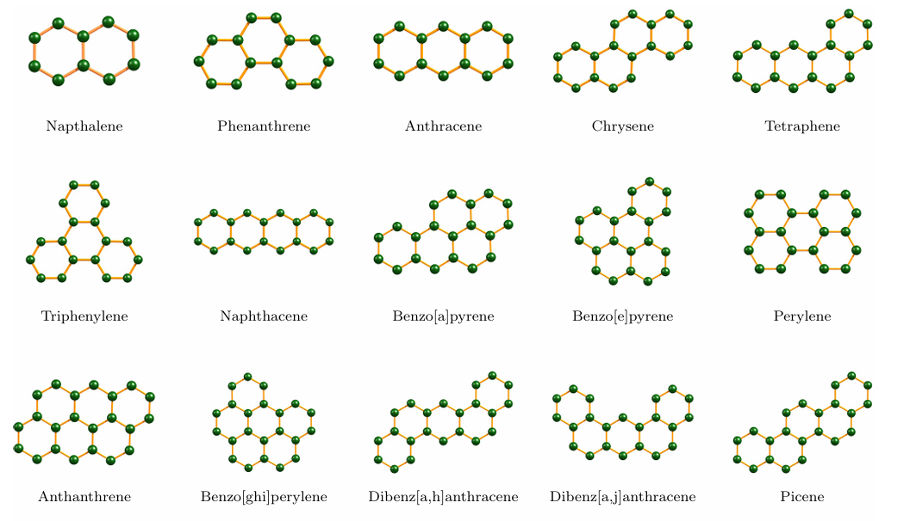
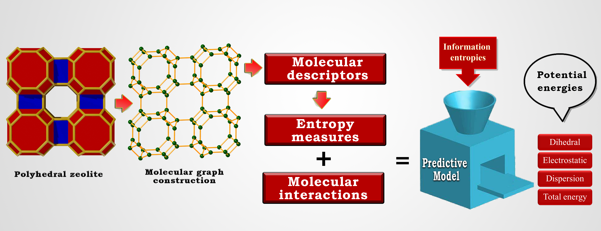
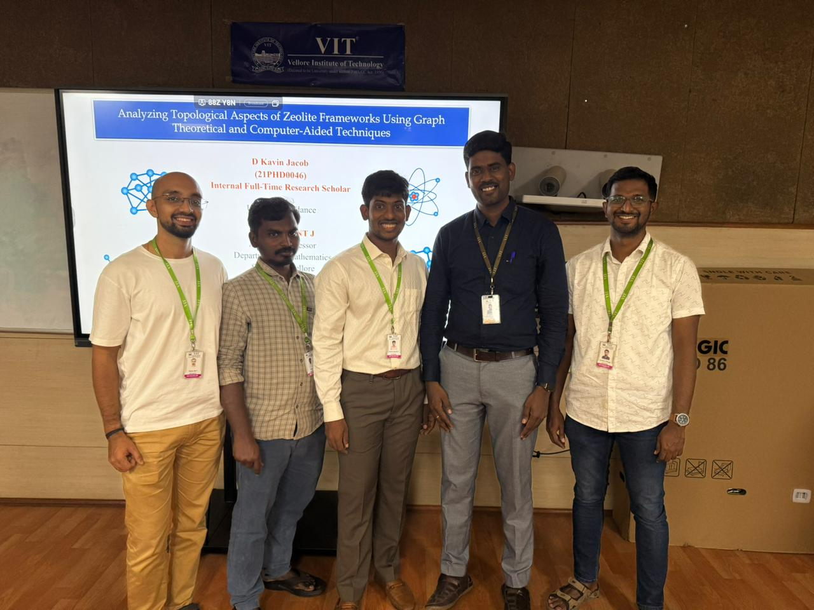

Introduction of Novel Hybrid Topological Indices
Our research team introduced novel hybrid topological indices that enhance the predictive ability of molecular descriptors, particularly for hydrocarbons. By combining classical topological indices with new structural and connectivity-based parameters, we develop refined descriptors that exhibit improved correlation with physicochemical properties and biological activities . These indices provide deeper insights into the molecular framework, enabling more accurate predictions in QSAR/QSPR modeling. The integration of hybrid indices in computational chemistry fosters advancements in drug design, materials science, and chemical informatics , bridging the gap between theoretical graph invariants and real-world applications.

Generalization of Topological Indices for Complex Graphs
We focus on the generalization of topological indices for complex graphs , particularly zeolite frameworks and 3D network structures . Traditional topological indices are primarily defined for planar molecular graphs, but their extension to three-dimensional, highly interconnected networks presents new challenges and opportunities. Zeolites, with their intricate pore structures and periodic frameworks, require specialized descriptors that account for spatial connectivity and long-range interactions . By adapting existing indices and formulating new ones, we aim to capture the unique topological properties of these frameworks, enabling better characterization of their catalytic behavior, adsorption capacity, and structural stability. Our work bridges graph theory, materials science, and computational chemistry , providing deeper insights into the mathematical representation of 3D chemical systems.

Developing Algorithms for Computing Topological Indices
We are also developing efficient algorithms and computer-aided techniques for the analysis of chemical and general networks. Manual computation of topological indices for large and complex graphs is impractical, necessitating the design of automated, scalable solutions . Our research involves implementing optimized graph traversal algorithms, adjacency-based indexing methods, and entropy-driven approaches to compute a wide range of graph invariants. Additionally, we are integrating these computational techniques into user-friendly software tools , making them accessible to researchers in chemistry, materials science, and network analysis. By leveraging advancements in algorithm design, data structures, and parallel computing , our goal is to provide a powerful computational framework for the rapid and accurate analysis of molecular and complex network properties.

Our research team at VIT, led by Dr. Clement J, is dedicated to advancing the field of mathematical chemistry and topological indices. Under his expert guidance, we explore the structural and computational aspects of chemical graph theory, with applications in QSAR/QSPR modeling, network analysis, and entropy measures. Working alongside my co-scholars Rahul M. P., Junias J. Singh, and P. Peter, we actively contribute to high-impact research, focusing on novel graph invariants, zeolite frameworks, and their implications in material science. Our collaborative efforts aim to push the boundaries of mathematical modeling and its interdisciplinary applications.
